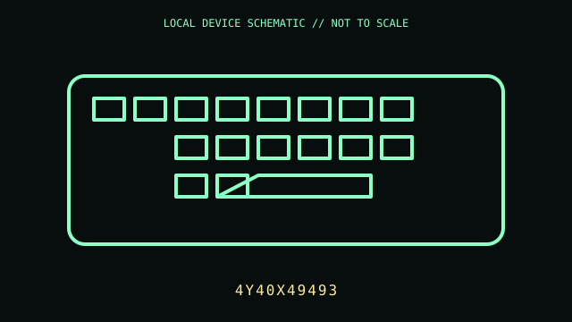

[ KEYBOARDS AND INTEGRATED POINTING DEVICES // IDENTIFIED COMPONENT ]
Lenovo ThinkPad TrackPoint Keyboard II
Compact wireless ThinkPad-layout keyboard with integrated TrackPoint and three-button pointing controls.

MODEL IDENTIFICATION: Manufacturer identity: 4Y40X49493. Compare the unit label, regional suffix, and revision against the manufacturer's manual before repair or compatibility claims.
Model specifications
| Catalog subcategory | Keyboards and integrated pointing devices |
|---|---|
| Exact model / ID | 4Y40X49493 |
| Model-specific features | Bluetooth 5.0 or 2.4 GHz USB nano receiver; rechargeable internal battery; TrackPoint with middle-button scrolling; USB-C charging port. |
| Interface and host support | Keyboard and pointing functions are exposed over Bluetooth or the supplied receiver. Bluetooth pairing, receiver mode, and operating-system TrackPoint options vary by host; USB-C is for charging. |
| Revision / driver caveat | Confirm product number 4Y40X49493 and keyboard layout printed on the bottom label. Do not assume USB-C is a wired data connection. Some Fn, TrackPoint, or firmware functions depend on operating system support. |
Preservation and service notes
Use the manufacturer charging lead and avoid prying the sealed rechargeable battery. Keep the small wireless receiver with the unit; inspect TrackPoint cap and USB-C port before service.
Record the as-found label, accessories, host OS, driver/firmware version, and test method. Separate observed condition from published specifications; do not treat family-level feature claims as proof of a unit's revision.
Primary manufacturer documentation
- Lenovo support — ThinkPad TrackPoint Keyboard II (4Y40X49493)Manufacturer support article for the exact product number; access may require a compatible locale.
- Lenovo support and manualsManufacturer portal for model-specific setup, software, and manuals; search by product number 4Y40X49493.
Manufacturer pages may change or retire. Preserve a copy of the applicable manual and note its revision when documenting a physical unit.